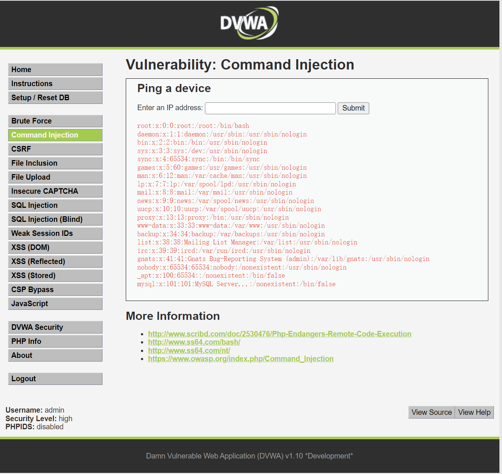

# DVWA 全级别通关
# 安装部署
直接用 docker 拉个镜像即可
sudo docker pull vulnerables/web-dvwa:latest | |
sudo docker run -it -d -p 8001:80 -p 3336:3306 vulnerables/web-dvwa |
装完以后发现，有点问题
allow_url_include = Off
# 进入 dvwa 容器 | |
sudo docker exec -it <container id> bash | |
grep -r 'allow_url_include = Off' / | |
# 进入这个目录 /etc/php/7.0/apache2/php.ini:allow_url_include = Off 改这个即可 | |
# 没用 vim/vi 用 sed | |
sed -i 's/allow_url_include = Off/allow_url_include = On/g' php.ini | |
service apache2 restart |
reCAPTCHA key:Missing
公钥和私钥自己去申请一下 选择 v2 复选框的版本：
https://www.google.com/recaptcha/admin/create
# 进入 dvwa 容器 | |
# 进入目录 /var/www/html/config/config.inc.php 改这个即可 | |
# 可以看一下公钥私钥字段的行数，我这里是 29 和 30 行 | |
# 在 29 行前插入公钥 | |
nl config.inc.php | sed -i "30i \$_DVWA[ 'recaptcha_public_key' ] = 'xxxxxxxxxxx...';" config.inc.php | |
# 在 30 行前插入私钥 | |
nl config.inc.php | sed -i "30i \$_DVWA[ 'recaptcha_private_key' ] = 'xxxxxxxxxxx...';" config.inc.php | |
# 把以前的 31 行和 32 行删掉 | |
nl config.inc.php | sed -i "31,32d" config.inc.php | |
# 重启下 apache | |
service apache2 restart | |
# 不放心的话也可以退出 dvwa docker 的系统，重启一下 dvwa 容器 | |
exit | |
sudo docker restart <container id> |
如下图这样就是配置成功了
# 暴力破解
# low 级
先对代码进行审计，没有任何防爆机制
<?php | |
if( isset( $_GET[ 'Login' ] ) ) { | |
// Get username | |
$user = $_GET[ 'username' ]; | |
// Get password | |
$pass = $_GET[ 'password' ]; | |
$pass = md5( $pass ); | |
// Check the database | |
$query = "SELECT * FROM `users` WHERE user = '$user' AND password = '$pass';"; | |
$result = mysql_query( $query ) or die( '<pre>' . mysql_error() . '</pre>' ); | |
if( $result && mysql_num_rows( $result ) == 1 ) { | |
// Get users details | |
$avatar = mysql_result( $result, 0, "avatar" ); | |
// Login successful | |
echo "<p>Welcome to the password protected area {$user}</p>"; | |
echo "<img src=\"{$avatar}\" />"; | |
} | |
else { | |
// Login failed | |
echo "<pre><br />Username and/or password incorrect.</pre>"; | |
} | |
mysql_close(); | |
} | |
?> |
随便输入用户名和密码，然后用 BurpSuite 抓包，点击登录，抓到包以后发送到 Intruder 模块，攻击类型选择 Cluster Bomb，将用户名和密码设置为变量。（这里用 Sniper 就行，选取密码这一个变量进行爆破，因为已经知道用户名 admin）
[!IMPORTANT]
攻击类型：
Sniper (狙击手)：可以设置任意多的变量，但只能设置一个 payload。所有变量都是使用一个 payload，当对一个变量进行爆破时，其他变量值保持不变，然后根据变量的顺序依次爆破。
对于用户名和密码的爆破，常用于已经知道了用户名或密码中的一个，去爆破另一个。
Batter ram (攻城锤)：可以设置任意多的变量，但只能设置一个 payload。所有变量都是使用一个 payload，同时爆破变量。
与 Sniper 类似，唯一的区别是，不是根据变量的顺序进行依次爆破，而是同时爆破所有变量。
对于用户名和密码的爆破不适用，使用这种攻击类型，每次爆破用户名和密码都是一样的。
Pitchfork (干草叉)：可以设置任意多的变量，每个变量都可以设置不同的 payload。爆破时，所有变量同时进行爆破，也就是说，变量每次读取的是对应 payload 中同一行的字段。例如，在爆破用户名和密码时，设置了两个 payload，第一行的用户名只能匹配第一行的密码，第二行的用户名只能匹配第二行的密码，以此类推... 这种攻击类型对于爆破用户名和密码是不完全的，仅仅只是把同一行的用户名和密码进行匹配，没有交错匹配。
Cluster Bomb (集束炸弹)：可以设置任意多的变量，每个变量都可以设置不同的 payload。爆破时，会尝试所有组合。（笛卡尔积）
以爆破用户名和密码为例，用户名变量为 payload1，密码变量为 payload2，用户名变量会读取 payload1 中的第一行时，密码变量读取 payload2 中的第一行；用户名变量会读取 payload1 中的第二行时，密码变量仍读取 payload2 中的第一行... 依次类推，直到 payload1 中的字段被读取完毕，密码才开始读取 payload2 中的第二行... 依次类推，直到所有用户名和密码的组合都尝试过一边。这可以说是 Pitchfork 的升级版，用户名和密码会交错匹配，尝试所有组合，但耗时间。
然后进行 payload 设置，分别对 payload1 和 payload2 设置字典，点击 start attack 开始爆破
看返回的长度可以确认真实的用户名和密码
或者选择筛选，我们从源码中可以看见登录成功时返回字段 Username and/or password incorrect.
用户名：admin 密码：password （用户名不区分大小写）到此 low 级结束。
# medium 级
先进行代码审计
<?php | |
if( isset( $_GET[ 'Login' ] ) ) { | |
// Sanitise username input | |
$user = $_GET[ 'username' ]; | |
$user = ((isset($GLOBALS["___mysqli_ston"]) && is_object($GLOBALS["___mysqli_ston"])) ? mysqli_real_escape_string($GLOBALS["___mysqli_ston"], $user ) : ((trigger_error("[MySQLConverterToo] Fix the mysql_escape_string() call! This code does not work.", E_USER_ERROR)) ? "" : "")); | |
// Sanitise password input | |
$pass = $_GET[ 'password' ]; | |
$pass = ((isset($GLOBALS["___mysqli_ston"]) && is_object($GLOBALS["___mysqli_ston"])) ? mysqli_real_escape_string($GLOBALS["___mysqli_ston"], $pass ) : ((trigger_error("[MySQLConverterToo] Fix the mysql_escape_string() call! This code does not work.", E_USER_ERROR)) ? "" : "")); | |
$pass = md5( $pass ); | |
// Check the database | |
$query = "SELECT * FROM `users` WHERE user = '$user' AND password = '$pass';"; | |
$result = mysqli_query($GLOBALS["___mysqli_ston"], $query ) or die( '<pre>' . ((is_object($GLOBALS["___mysqli_ston"])) ? mysqli_error($GLOBALS["___mysqli_ston"]) : (($___mysqli_res = mysqli_connect_error()) ? $___mysqli_res : false)) . '</pre>' ); | |
if( $result && mysqli_num_rows( $result ) == 1 ) { | |
// Get users details | |
$row = mysqli_fetch_assoc( $result ); | |
$avatar = $row["avatar"]; | |
// Login successful | |
echo "<p>Welcome to the password protected area {$user}</p>"; | |
echo "<img src=\"{$avatar}\" />"; | |
} | |
else { | |
// Login failed | |
sleep( 2 ); | |
echo "<pre><br />Username and/or password incorrect.</pre>"; | |
} | |
((is_null($___mysqli_res = mysqli_close($GLOBALS["___mysqli_ston"]))) ? false : $___mysqli_res); | |
} | |
?> |
相比 low，medium 增加了 mysqli_real_escape_string() 函数，这个函数用于转义字符串中的特殊字符，以防止与 MySQL 数据库交互时发生 SQL 注入攻击。这个函数接收两个参数，第一个参数是数据库的连接对象，第二个参数是需要转义的字符串。还在登录失败后增加了 sleep (2) 睡眠 2 秒，增加了暴力破解的时间。因此，对暴力破解还是没有实质性的防治措施，用 low 级的方法就能可以了，就不再演示。
# high 级
先进行代码审计
<?php | |
if( isset( $_GET[ 'Login' ] ) ) { | |
// Check Anti-CSRF token | |
checkToken( $_REQUEST[ 'user_token' ], $_SESSION[ 'session_token' ], 'index.php' ); | |
// Sanitise username input | |
$user = $_GET[ 'username' ]; | |
$user = stripslashes( $user ); | |
$user = ((isset($GLOBALS["___mysqli_ston"]) && is_object($GLOBALS["___mysqli_ston"])) ? mysqli_real_escape_string($GLOBALS["___mysqli_ston"], $user ) : ((trigger_error("[MySQLConverterToo] Fix the mysql_escape_string() call! This code does not work.", E_USER_ERROR)) ? "" : "")); | |
// Sanitise password input | |
$pass = $_GET[ 'password' ]; | |
$pass = stripslashes( $pass ); | |
$pass = ((isset($GLOBALS["___mysqli_ston"]) && is_object($GLOBALS["___mysqli_ston"])) ? mysqli_real_escape_string($GLOBALS["___mysqli_ston"], $pass ) : ((trigger_error("[MySQLConverterToo] Fix the mysql_escape_string() call! This code does not work.", E_USER_ERROR)) ? "" : "")); | |
$pass = md5( $pass ); | |
// Check database | |
$query = "SELECT * FROM `users` WHERE user = '$user' AND password = '$pass';"; | |
$result = mysqli_query($GLOBALS["___mysqli_ston"], $query ) or die( '<pre>' . ((is_object($GLOBALS["___mysqli_ston"])) ? mysqli_error($GLOBALS["___mysqli_ston"]) : (($___mysqli_res = mysqli_connect_error()) ? $___mysqli_res : false)) . '</pre>' ); | |
if( $result && mysqli_num_rows( $result ) == 1 ) { | |
// Get users details | |
$row = mysqli_fetch_assoc( $result ); | |
$avatar = $row["avatar"]; | |
// Login successful | |
echo "<p>Welcome to the password protected area {$user}</p>"; | |
echo "<img src=\"{$avatar}\" />"; | |
} | |
else { | |
// Login failed | |
sleep( rand( 0, 3 ) ); | |
echo "<pre><br />Username and/or password incorrect.</pre>"; | |
} | |
((is_null($___mysqli_res = mysqli_close($GLOBALS["___mysqli_ston"]))) ? false : $___mysqli_res); | |
} | |
// Generate Anti-CSRF token | |
generateSessionToken(); | |
?> |
generateSessionToken(); 根据注释可以理解：用于生成反 CSRF 令牌
这段代码放到最后，说明无论登录成功或失败，他都会生成新的 session_token
checkToken( $_REQUEST[ 'user_token' ], $_SESSION[ 'session_token' ], 'index.php' );
根据注释可以理解：检查反 CSRF 令牌。
我们详细分析一下。（这里先不分析 CSRF，就针对暴力破解来分析。）
Session 意思是会话。当用户访问服务器，就开始了一次会话，这个时候服务器为用户生成一个 session（会话），sessionID 表示这 个会话的唯一标识。
$_SESSION[ 'session_token' ] 读取 generateSessionToken() 生成的会话令牌 ( session_token )
$_REQUEST[ 'user_token' ] 读取请求中的用户令牌（ user_token ）
我们无法查看 checkToken () 函数的源码，但可以确定是检测 user_token 和 session_token 的，如果这个函数检查不通过用户名和密码正确也登录不了。
generateSessionToken() 生成 session_token 是放在服务端进行的，即使我们反复登录，checkToken () 也能正确的读取 session_token, 因此不是影响暴力破解的因素。
影响暴力破解的因素就是 user_token，只要每次都能获取正确的 user_token，便可完成暴力破解。
我们在该页面，右键查看源代码可见 user_token ，在刷新时，这个 user_token 是会发生改变的。
打开 BurpSuite 抓包，输入用户名 admin，密码随便输，点击登录，将抓到的结果发送到 Intruder
选择 Pitchfork 攻击类型，选取密码和 user_token 作为变量
先点击 Setting 选项卡，找到 Grep-Extract（提取响应消息中的有用信息），点击 Add, 点击 refetch response, 双击 token 值，点 ok
往下翻，Redirections 设置为 Always，这个配置是说攻击时，Burp Suite 怎么处理重定向，配置成总是跟随重定向
再设置 Resource pool，因为 Recursive_Grep 模式不支持多线程攻击。
老版本的 BurpSuite 是 option 下的 Request Engine。
将攻击线程设置为 1，请求间隔设置为 2000ms
设置 payload 1，跟前面一样导入密码字典就行
设置 payload2，注意 payload 类型，填上刚才抓包的 user_token 作为初始 payload，配置完就可以开始攻击了
两种方法确定密码，一是反选，就是把反选登录失败时的字段 Username and/or password incorrect.
二是看响应长度，最长那个就是
到此 high 级暴力破解完成。
# impossible 级
针对暴力破解，GET 提交方式改为 POST 提交方式，也加入了 token 校验，同时限制登录次数，如果登录失败三次账户就会被锁定，需要等待 15 分钟才能尝试。
<?php | |
if( isset( $_POST[ 'Login' ] ) && isset ($_POST['username']) && isset ($_POST['password']) ) { | |
// 检查 token | |
checkToken( $_REQUEST[ 'user_token' ], $_SESSION[ 'session_token' ], 'index.php' ); | |
// 用户名输入保护措施，过滤一些特殊字符 | |
$user = $_POST[ 'username' ]; | |
$user = stripslashes( $user );// 返回一个去除转义反斜线后的字符串（\' 转换为 ' 等等）。双反斜线（\\）被转换为单个反斜线（\） | |
$user = ((isset($GLOBALS["___mysqli_ston"]) && is_object($GLOBALS["___mysqli_ston"])) ? mysqli_real_escape_string($GLOBALS["___mysqli_ston"], $user ) : ((trigger_error("[MySQLConverterToo] Fix the mysql_escape_string() call! This code does not work.", E_USER_ERROR)) ? "" : "")); | |
// 密码输入保护措施 | |
$pass = $_POST[ 'password' ]; | |
$pass = stripslashes( $pass ); | |
$pass = ((isset($GLOBALS["___mysqli_ston"]) && is_object($GLOBALS["___mysqli_ston"])) ? mysqli_real_escape_string($GLOBALS["___mysqli_ston"], $pass ) : ((trigger_error("[MySQLConverterToo] Fix the mysql_escape_string() call! This code does not work.", E_USER_ERROR)) ? "" : "")); | |
$pass = md5( $pass ); | |
// 默认值，失败次数，锁定时间，账户是否锁定 | |
$total_failed_login = 3; | |
$lockout_time = 15; | |
$account_locked = false; | |
// 获取最近一次登录时间，还有失败登录次数 | |
$data = $db->prepare( 'SELECT failed_login, last_login FROM users WHERE user = (:user) LIMIT 1;' ); | |
$data->bindParam( ':user', $user, PDO::PARAM_STR ); | |
$data->execute(); | |
$row = $data->fetch(); | |
// 查看用户是否被锁定 | |
if( ( $data->rowCount() == 1 ) && ( $row[ 'failed_login' ] >= $total_failed_login ) ) { | |
// User locked out. Note, using this method would allow for user enumeration! | |
//echo "<pre><br />This account has been locked due to too many incorrect logins.</pre>"; | |
// 计算何时允许用户再次登录 | |
$last_login = strtotime( $row[ 'last_login' ] ); | |
$timeout = $last_login + ($lockout_time * 60); | |
$timenow = time(); | |
/* | |
print "The last login was: " . date ("h:i:s", $last_login) . "<br />"; | |
print "The timenow is: " . date ("h:i:s", $timenow) . "<br />"; | |
print "The timeout is: " . date ("h:i:s", $timeout) . "<br />"; | |
*/ | |
// 检查是否已经过去了足够的时间，如果它没有锁定帐户 | |
if( $timenow < $timeout ) { | |
$account_locked = true; | |
// print "The account is locked<br />"; | |
} | |
} | |
// 检查数据库（如果用户名与密码匹配） | |
$data = $db->prepare( 'SELECT * FROM users WHERE user = (:user) AND password = (:password) LIMIT 1;' ); | |
$data->bindParam( ':user', $user, PDO::PARAM_STR); | |
$data->bindParam( ':password', $pass, PDO::PARAM_STR ); | |
$data->execute(); | |
$row = $data->fetch(); | |
// 如果是有效的登录... | |
if( ( $data->rowCount() == 1 ) && ( $account_locked == false ) ) { | |
// 获得用户信息 | |
$avatar = $row[ 'avatar' ]; | |
$failed_login = $row[ 'failed_login' ]; | |
$last_login = $row[ 'last_login' ]; | |
// 登录成功 | |
echo "<p>Welcome to the password protected area <em>{$user}</em></p>"; | |
echo "<img src=\"{$avatar}\" />"; | |
// 自上次登录以来，帐户是否被锁定？ | |
if( $failed_login >= $total_failed_login ) { | |
echo "<p><em>Warning</em>: Someone might of been brute forcing your account.</p>"; | |
echo "<p>Number of login attempts: <em>{$failed_login}</em>.<br />Last login attempt was at: <em>${last_login}</em>.</p>"; | |
} | |
// 重置错误的登录计数 | |
$data = $db->prepare( 'UPDATE users SET failed_login = "0" WHERE user = (:user) LIMIT 1;' ); | |
$data->bindParam( ':user', $user, PDO::PARAM_STR ); | |
$data->execute(); | |
} else { | |
// 登录失败 | |
sleep( rand( 2, 4 ) ); | |
// 用户反馈 | |
echo "<pre><br />Username and/or password incorrect.<br /><br/>Alternative, the account has been locked because of too many failed logins.<br />If this is the case, <em>please try again in {$lockout_time} minutes</em>.</pre>"; | |
// 更新错误登录计数 | |
$data = $db->prepare( 'UPDATE users SET failed_login = (failed_login + 1) WHERE user = (:user) LIMIT 1;' ); | |
$data->bindParam( ':user', $user, PDO::PARAM_STR ); | |
$data->execute(); | |
} | |
// 设置上次登录时间 | |
$data = $db->prepare( 'UPDATE users SET last_login = now() WHERE user = (:user) LIMIT 1;' ); | |
$data->bindParam( ':user', $user, PDO::PARAM_STR ); | |
$data->execute(); | |
} | |
// 生成 session token | |
generateSessionToken(); | |
?> |
# 总结
对于暴力破解，可以通过设置 token、设定登录失败次数的阈值、设置验证码等来进行防御。
对于攻击者来说，社工才是更好的选择。
这个靶场主要练习了 BurpSuite 的抓包，Intruder 模块，熟练使用不同的攻击类型，以及根据情况配置不同的 payload，PHP 代码审计也至关重要，仍需继续努力...
-
Burp Suite
- proxy 模块
- intruder 模块
- 4 种攻击类型
- 抓取重要响应内容配置 payload
-
暴力破解防范措施
-
php 代码审计
# 命令注入
# low 级
先进行代码审计
<?php | |
if( isset( $_POST[ 'Submit' ] ) ) { | |
// Get input | |
$target = $_REQUEST[ 'ip' ]; | |
// Determine OS and execute the ping command. | |
if( stristr( php_uname( 's' ), 'Windows NT' ) ) { | |
// Windows | |
$cmd = shell_exec( 'ping ' . $target ); | |
} | |
else { | |
// *nix | |
$cmd = shell_exec( 'ping -c 4 ' . $target ); | |
} | |
// Feedback for the end user | |
echo "<pre>{$cmd}</pre>"; | |
} | |
?> |
这段代码就是根据输入的 ip 地址，然后判断系统是 Linux 还是 Windows 然后对 IP 执行 ping 命令。
没有对数据进行任何过滤，非常危险。
[!IMPORTANT]
下面符号在 Linux 和 Windows 中用法一致
&&：command1 && command2，如果 command1 执行成功，才会执行command2，如果command2执行失败，command2不执行
&：command1 & command2，先执行command1，再执行command2，无论command1执行是否成功，command2都执行
||：command1 || command2，如果 commad1 执行成功，则 command2 不执行，只有 command1 执行失败，command2 才执行
|：管道命令，常用作过滤，把前一个命令执行结果作为后一个命令的执行输入，例如：cat /etc/passwd |grep "root"command1 |command2：如果 command2 不需要输入，那么不管command1是什么，结果是 command2 的执行结果 `
;：command1;commadn2：按顺序执行，先执行command1再执行command2
输入一个能 ping 的通的 ip
192.168.222.133 && cat /etc/passwd #linux 查看所有用户 | |
192.168.222.133 && net user #win 查看所有用户 |
输入一个 ping 不通的 IP
192.168.199.188 || cat /etc/passwd |
随便输入一个 IP，无论是否能 ping 通
192.168.232.123;cat /etc/passwd |
# medium 级
先代码审计
<?php | |
if( isset( $_POST[ 'Submit' ] ) ) { | |
// Get input | |
$target = $_REQUEST[ 'ip' ]; | |
// Set blacklist | |
$substitutions = array( | |
'&&' => '', | |
';' => '', | |
); | |
// Remove any of the charactars in the array (blacklist). | |
$target = str_replace( array_keys( $substitutions ), $substitutions, $target ); | |
// Determine OS and execute the ping command. | |
if( stristr( php_uname( 's' ), 'Windows NT' ) ) { | |
// Windows | |
$cmd = shell_exec( 'ping ' . $target ); | |
} | |
else { | |
// *nix | |
$cmd = shell_exec( 'ping -c 4 ' . $target ); | |
} | |
// Feedback for the end user | |
echo "<pre>{$cmd}</pre>"; | |
} | |
?> |
相比 low 级，增加了 ; 和 && 过滤，但是可以用其他连接符号
随便输入一个 IP，无论是否能 ping 通
192.168.232.123;cat /etc/passwd |
# high 级
先进行代码审计
<?php | |
if( isset( $_POST[ 'Submit' ] ) ) { | |
// Get input | |
$target = trim($_REQUEST[ 'ip' ]); | |
// Set blacklist | |
$substitutions = array( | |
'&' => '', | |
';' => '', | |
'| ' => '', | |
'-' => '', | |
'$' => '', | |
'(' => '', | |
')' => '', | |
'`' => '', | |
'||' => '', | |
); | |
// Remove any of the charactars in the array (blacklist). | |
$target = str_replace( array_keys( $substitutions ), $substitutions, $target ); | |
// Determine OS and execute the ping command. | |
if( stristr( php_uname( 's' ), 'Windows NT' ) ) { | |
// Windows | |
$cmd = shell_exec( 'ping ' . $target ); | |
} | |
else { | |
// *nix | |
$cmd = shell_exec( 'ping -c 4 ' . $target ); | |
} | |
// Feedback for the end user | |
echo "<pre>{$cmd}</pre>"; | |
} | |
?> |
high 级也是加了过滤，但是对管道符的过滤还多加了空格 | ，对管道符的过滤是无效的
随便输入一个 IP，无论能否 ping 通
192.168.232.123|cat /etc/passwd

# impossible 级
<?php | |
if( isset( $_POST[ 'Submit' ] ) ) { | |
// Check Anti-CSRF token | |
checkToken( $_REQUEST[ 'user_token' ], $_SESSION[ 'session_token' ], 'index.php' ); | |
// Get input | |
$target = $_REQUEST[ 'ip' ]; | |
$target = stripslashes( $target ); | |
// Split the IP into 4 octects | |
$octet = explode( ".", $target ); | |
// Check IF each octet is an integer | |
if( ( is_numeric( $octet[0] ) ) && ( is_numeric( $octet[1] ) ) && ( is_numeric( $octet[2] ) ) && ( is_numeric( $octet[3] ) ) && ( sizeof( $octet ) == 4 ) ) { | |
// If all 4 octets are int's put the IP back together. | |
$target = $octet[0] . '.' . $octet[1] . '.' . $octet[2] . '.' . $octet[3]; | |
// Determine OS and execute the ping command. | |
if( stristr( php_uname( 's' ), 'Windows NT' ) ) { | |
// Windows | |
$cmd = shell_exec( 'ping ' . $target ); | |
} | |
else { | |
// *nix | |
$cmd = shell_exec( 'ping -c 4 ' . $target ); | |
} | |
// Feedback for the end user | |
echo "<pre>{$cmd}</pre>"; | |
} | |
else { | |
// Ops. Let the user name theres a mistake | |
echo '<pre>ERROR: You have entered an invalid IP.</pre>'; | |
} | |
} | |
// Generate Anti-CSRF token | |
generateSessionToken(); | |
?> |
我们用 php 复现一下
<?php | |
$ip = '192.168.222.133 && cat /etc/passwd'; | |
$target = stripslashes($ip); | |
echo $target; | |
$octet = explode( ".", $target ); | |
echo "\n"; | |
for ($i = 0; $i < count($octet); $i++) { | |
print_r($octet[$i]); | |
echo "\n"; | |
} | |
if( ( is_numeric( $octet[0] ) ) && ( is_numeric( $octet[1] ) ) && ( is_numeric( $octet[2] ) ) && ( is_numeric( $octet[3] ) ) && ( sizeof( $octet ) == 4 ) ) { | |
$target = $octet[0] . '.' . $octet[1] . '.' . $octet[2] . '.' . $octet[3]; | |
if( stristr( php_uname( 's' ), 'Windows NT' ) ) { | |
$cmd = shell_exec( 'ping ' . $target ); | |
} | |
else { | |
$cmd = shell_exec( 'ping -c 4 ' . $target ); | |
} | |
echo "<pre>{$cmd}</pre>"; | |
} | |
else { | |
echo '<pre>ERROR: You have entered an invalid IP.</pre>'; | |
} | |
?> |
输出结果：
192.168.222.133 && cat /etc/passwd | |
192 | |
168 | |
222 | |
133 && cat /etc/passwd | |
<pre>ERROR: You have entered an invalid IP.</pre> |
先是过滤了反斜杠，然后将输入的 IP，按 . 分割，存入数组，判断数组中的元素是否为数字，有一个元素不是数字，就无法执行命令。
至此命令注入篇就完全结束。
# 总结
这一章学习了，命令连接符号在命令注入中的运用，并且如何防范命令注入漏洞。
- 四种命令连接符的使用场景
- 如何防范命令注入
# CSRF
CSRF，Cross-site request forgery），跨站请求伪造
利用受害者尚未失效的身份认证信息（cookie、会话等），诱骗其点击恶意链接或者访问包含攻击代码的页面，在受害人不知情的情况下以受害者的身份向（身份认证信息所对应的）服务器发送请求，从而完成非法操作（如转账、改密等）。
# low 级
先进行代码审计
<?php | |
if( isset( $_GET[ 'Change' ] ) ) { | |
// Get input | |
$pass_new = $_GET[ 'password_new' ]; | |
$pass_conf = $_GET[ 'password_conf' ]; | |
// Do the passwords match? | |
if( $pass_new == $pass_conf ) { | |
// They do! | |
$pass_new = ((isset($GLOBALS["___mysqli_ston"]) && is_object($GLOBALS["___mysqli_ston"])) ? mysqli_real_escape_string($GLOBALS["___mysqli_ston"], $pass_new ) : ((trigger_error("[MySQLConverterToo] Fix the mysql_escape_string() call! This code does not work.", E_USER_ERROR)) ? "" : "")); | |
$pass_new = md5( $pass_new ); | |
// Update the database | |
$insert = "UPDATE `users` SET password = '$pass_new' WHERE user = '" . dvwaCurrentUser() . "';"; | |
$result = mysqli_query($GLOBALS["___mysqli_ston"], $insert ) or die( '<pre>' . ((is_object($GLOBALS["___mysqli_ston"])) ? mysqli_error($GLOBALS["___mysqli_ston"]) : (($___mysqli_res = mysqli_connect_error()) ? $___mysqli_res : false)) . '</pre>' ); | |
// Feedback for the user | |
echo "<pre>Password Changed.</pre>"; | |
} | |
else { | |
// Issue with passwords matching | |
echo "<pre>Passwords did not match.</pre>"; | |
} | |
((is_null($___mysqli_res = mysqli_close($GLOBALS["___mysqli_ston"]))) ? false : $___mysqli_res); | |
} | |
?> |
简单的验证了两次密码是否一致，如果一致就更新数据库，没有任何防护措施。
随便输入两次密码，用 BurpSuite 抓包，抓到以后，鼠标右键，选择 Engagement tools>>Generate CSRF PoC

自动生 CRSF 的 POC，修改 vaule，然后点击，Test in browser，复制链接到浏览器上打开，密码会被直接修改。(也可以复制到文件中打开)

在实战中常常通过构造短链接或构造文件的方式来进行攻击
短链接生成器：https://my5353.com/
将修改密码的 url： http://192.168.222.132:8000/vulnerabilities/csrf/?password_new=1234&password_conf=1234&Change=Change 粘贴上去生成短链接

直接点击短链接就可以直接修改密码

未完待续...